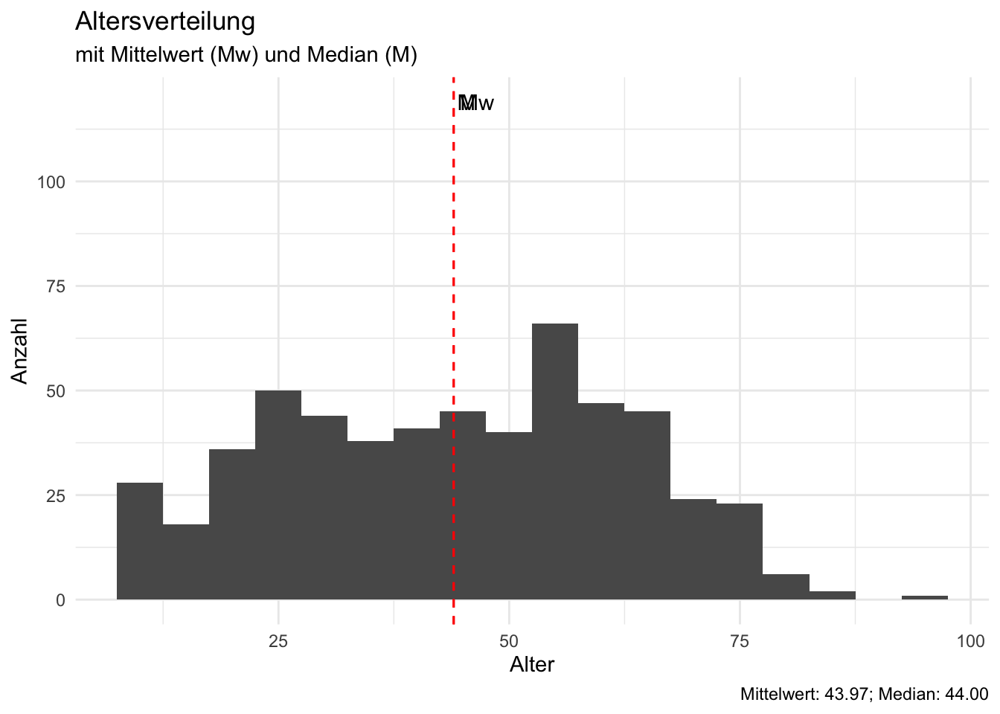

| Variable | omega_h | alpha | Uni | tau | max.split | mean.r | med.r | n.items |
|---|---|---|---|---|---|---|---|---|
| CANX | 0.07 | 0.73 | 0.72 | 0.72 | 0.75 | 0.40 | 0.39 | 4 |
| PRA | 0.65 | 0.75 | 0.99 | 0.99 | 0.78 | 0.43 | 0.42 | 4 |
| IMO | 0.57 | 0.79 | 0.90 | 0.93 | 0.83 | 0.43 | 0.42 | 5 |
| KBE | 0.26 | 0.65 | 0.83 | 0.88 | 0.76 | 0.31 | 0.27 | 4 |
| KBU | 0.62 | 0.75 | 0.95 | 0.97 | 0.80 | 0.43 | 0.46 | 4 |
Die FHNW an der Olma
Deskriptive Statistik
In diesem Datensatz haben bislang 282 Personen teilgennommen.
Demographische Angaben
Alter
Die Angabe des Alters wurde in ganzen Jahren erfasst Figure 1

Bildungsabschluss
Die erreichten Bildungsabschlüsse verteilen sich wie in Table 1 dargestellt.
| Bildung | Anzahl | % | Mw Alter | SD Alter |
|---|---|---|---|---|
| Ohne | 13 | 4.61 | 15.2 | 14.1 |
| Volksschule | 27 | 9.57 | 22.0 | 17.5 |
| Gymnasium/Fachmittelschule | 12 | 4.26 | 46.8 | 22.3 |
| Berufsbildung | 68 | 24.11 | 50.3 | 15.9 |
| höhere Berufsbildung | 80 | 28.37 | 49.2 | 14.9 |
| Hochschule | 82 | 29.08 | 48.9 | 15.7 |
Table 1:
Übersicht der Bildungsabschlüsse
Vorwissen mit VR
Das Vorwissen umfasst die Häufigkeit mit welcher die Personen bereits Erfahrungen mit VR Endgeräten gesammelt haben (vgl. Figure 2). Bei vorhandenen Erfahrungen wurde weiter erfragt woher diese stammen (vgl Table 2)

Anwendung der VR Technologie
Menschen, die bereits einige Vorerfahrung mit VR angaben, wurden gebeten, das Anwendungsfeld zu bezeichnen. Die folgende Tabelle zeigt nur Mehrfachnennungen.
| Aussage | n |
|---|---|
| 1 Mal | |
| olma | 7 |
| ausstellung | 3 |
| kino | 2 |
| 2 - 10 Mal | |
| freizeit | 6 |
| arbeit | 4 |
| gamen | 3 |
| an messen | 2 |
| gaming | 2 |
| weiterbildung | 2 |
Table 2:
Nennungen der Anwendungsorte
Skalenüberischt
Die Angst oder Furcht vor Computern wurde mit der Computer Anxiety Scale1 erfasst.
| Variable | mean | sd | median | min | max | range | skew | kurtosis | se |
|---|---|---|---|---|---|---|---|---|---|
| Computer Ängstlichkeit | |||||||||
| CANX_1 | 2.44 | 1.77 | 2.00 | 1.00 | 7.00 | 6.00 | 1.28 | 0.58 | 0.11 |
| CANX_2 | 2.47 | 1.82 | 2.00 | 1.00 | 7.00 | 6.00 | 1.11 | −0.02 | 0.11 |
| CANX_3 | 2.33 | 1.71 | 2.00 | 1.00 | 7.00 | 6.00 | 1.22 | 0.28 | 0.10 |
| CANX_4 | 2.17 | 1.54 | 2.00 | 1.00 | 7.00 | 6.00 | 1.40 | 1.14 | 0.09 |
| Präsenz | |||||||||
| PRA_1 | 3.83 | 0.92 | 4.00 | 1.00 | 5.00 | 4.00 | −0.95 | 0.84 | 0.05 |
| PRA_2 | 2.93 | 1.10 | 3.00 | 1.00 | 5.00 | 4.00 | −0.03 | −0.97 | 0.07 |
| PRA_3 | 3.57 | 1.03 | 4.00 | 1.00 | 5.00 | 4.00 | −0.58 | −0.48 | 0.06 |
| PRA_4 | 3.83 | 1.08 | 4.00 | 1.00 | 5.00 | 4.00 | −0.79 | −0.24 | 0.06 |
| Intrinsische Motivation | |||||||||
| IMO_1 | 3.55 | 1.15 | 4.00 | 1.00 | 5.00 | 4.00 | −0.48 | −0.55 | 0.07 |
| IMO_2 | 3.96 | 0.98 | 4.00 | 1.00 | 5.00 | 4.00 | −0.98 | 0.71 | 0.06 |
| IMO_3 | 4.30 | 0.88 | 5.00 | 1.00 | 5.00 | 4.00 | −1.27 | 1.39 | 0.05 |
| IMO_4 | 4.16 | 1.05 | 4.00 | 1.00 | 5.00 | 4.00 | −1.23 | 0.81 | 0.06 |
| IMO_5 | 3.87 | 1.13 | 4.00 | 1.00 | 5.00 | 4.00 | −1.01 | 0.34 | 0.07 |
| Kognitive Belastung durch externe Faktoren | |||||||||
| KBE_1 | 1.61 | 0.88 | 1.00 | 1.00 | 5.00 | 4.00 | 1.78 | 3.26 | 0.05 |
| KBE_2 | 2.24 | 1.30 | 2.00 | 1.00 | 5.00 | 4.00 | 0.77 | −0.60 | 0.08 |
| KBE_3 | 1.76 | 0.95 | 2.00 | 1.00 | 5.00 | 4.00 | 1.43 | 1.90 | 0.06 |
| KBE_4 | 1.49 | 0.80 | 1.00 | 1.00 | 5.00 | 4.00 | 1.82 | 3.29 | 0.05 |
| Kognitive Belastung durch die Umgebung | |||||||||
| KBU_1 | 1.56 | 0.74 | 1.00 | 1.00 | 5.00 | 4.00 | 1.41 | 2.23 | 0.04 |
| KBU_2 | 1.92 | 1.16 | 2.00 | 1.00 | 5.00 | 4.00 | 1.25 | 0.61 | 0.07 |
| KBU_3 | 1.73 | 0.95 | 1.00 | 1.00 | 5.00 | 4.00 | 1.35 | 1.38 | 0.06 |
| KBU_4 | 1.59 | 0.85 | 1.00 | 1.00 | 5.00 | 4.00 | 1.75 | 3.28 | 0.05 |
Table 3:
Item Statistik

Wissensfragen
Das Lernen in der VR sImulation wurde durch drei MC-Fragen operationalisiert.
| Antworten | Anzahl | % |
|---|---|---|
| 0 | 11 | 3.90 |
| 1 | 47 | 16.67 |
| 2 | 96 | 34.04 |
| 3 | 128 | 45.39 |
In Abhängigkeit von Alter und Bildungsstufe ergibt sich folgendes Bild:


Footnotes
The degree of “an individual’s apprehension, or even fear, when she/he is faced with the possibility of using computers” [@venkateshDeterminantsPerceivedEase2000, p.349]↩︎